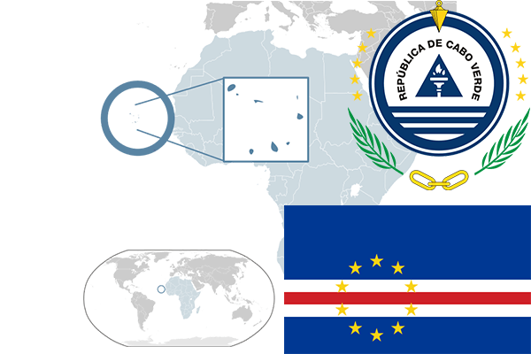

To`liq nomi: Kabo-Verde Respublikasi
Region: G`arbiy Afrika
Qonunchilik shakli: Respublika
Mustaqillik kuni: 5-iyul 1975 yil (Portugaliyadan)
Poytaxti: Praya
Maydoni: 4033 km² (dunyoda 166 -o`rinda )
Chegaradosh davlatlari: Yo`q
Aholisi: 523 568 (2012 -yil roʻyxat)
Aholi zichligi: 129,8 /km²
Aholining o`rtacha yoshi: 71,05 yil ( 74,4 ayollar, 67,7 erkaklar)
Rasmiy tili: Portugal tili
Dini: 80% katolik va mahalliy dinlar
Pul birligi: Kabo-Verde eskudosi
Telefon prefiksi: +238
Internet domen: .cv
Xalqaro tashkilotlarga a`zoligi: BMT (1975 –yildan)
Dengiz va okeanlarga chiqishi: Atlantika okeani
YIM: Butun: $ 2990 mln, Jon boshiga: $ 2430 (2007 - yil roʻyxati)
Yirik shaharlari: Praya